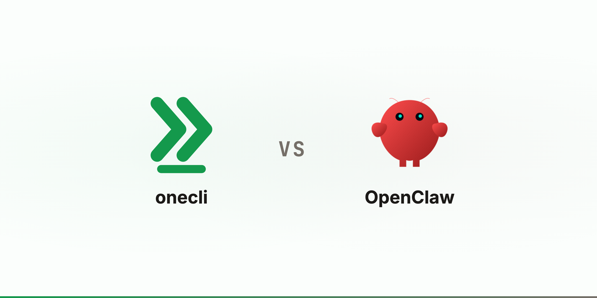

Compare
OneCLI vs OpenClaw
OpenClaw gives one person an agent with the run of their machine. OneCLI gives a company one per employee, with nothing it can steal.
UpdatedThe short version
Credit first. Peter Steinberger's OpenClaw went from weekend project to the most-starred repository on GitHub in under five months, and nearly everything in this category, ours included, exists downstream of it. It is free, open source, and its channel coverage is broader than ours. So this page is not about whether OpenClaw is good. It is about what changes when you stop installing it once and start installing it forty times.


The problem is the fortieth install, not the first
On one machine, OpenClaw's design is coherent. The agent is you: it holds your keys because you hold your keys, and if it does something you did not want, you are the one who finds out. The trust boundary is your laptop, and you already trusted your laptop.
A company does not have that boundary. Forty installs means forty unmanaged machines and forty copies of credentials in config files. Nobody can answer "which agent touched the billing API last Tuesday," because the answer lives in forty places and none of them are yours. When someone leaves, their agent keeps its keys until a human remembers to rotate them.
Sandboxing helps and OpenClaw has some. What a container does not solve is the credential: the key is still inside the box with the agent, so anything that can talk the agent into echoing it walks out with it. Containment limits what the agent breaks locally. It does not limit what a stolen key does afterwards, from anywhere.
What we changed
The agent boots with placeholder credentials, including the model key. The gateway splices in the real secret at the network boundary on the way out, so there is nothing in the sandbox worth stealing and "stop using the proxy" is not an option the agent has. Everything it does leaves as an HTTP request, so one place sees all of it: MCP calls, CLI commands, curl, and code the agent wrote thirty seconds ago. That is where policy runs. Allow, block, rate limit, or hold for a human, per request, scoped to the employee whose agent it is.
The model
onecli
A company: one agent per employee, provisioned centrally in its own sandboxOpenClaw
A person: one agent on your own machine, installed and updated by youonecli
They log in. The agent already has the company's tools and skillsOpenClaw
Install, onboard, choose a model, paste in each API keyonecli
Multi-tenant. One deployment holds the whole org, and a new hire is a new user rather than a new installOpenClaw
Single-tenant by design. One install per person, each one a machine somebody has to keep updatedCredentials
onecli
Placeholders. Real keys are injected at the wire, including the model keyOpenClaw
Your real keys, in plaintext config on the machine it runs ononecli
A disposable sandbox, plus exactly the API calls policy allowedOpenClaw
The machine, and every account whose key is on itonecli
Revoke the person. Their agent stops resolving credentials on the next requestOpenClaw
Find the machine, rotate every key that was on itControl
onecli
At the network. Every request is evaluated, whatever produced it: MCP calls, CLI commands, curl from a shell, or code written at runtimeOpenClaw
In the loop: command approval prompts and DM pairing, covering configured tools and shell commandsonecli
Allow, block, rate limit, or hold for human approval, per request and per connectionOpenClaw
Approve or deny a command, decided by the person at the keyboardonecli
Each agent reaches only what its person already has. Support cannot reach payrollOpenClaw
One user, one machine, no notion of an org to scope againstonecli
One log across every agent: who asked, what was called, what was injected, what was deniedOpenClaw
Local logs on each machine, readable by that machine's ownerDay to day
onecli
Web, terminal, and SlackOpenClaw
WhatsApp, Telegram, Discord, Slack, Signal, iMessage, email, voiceonecli
Paid per user and agent, with a free Apache-2.0 edition you can self-host on your own hardwareOpenClaw
Free forever, open source under a non-profit foundation, with a contributor base we will not matchWhen to use which
Use OpenClaw when
- ·It is for you, on your machine, with your own accounts
- ·You want it in WhatsApp, Signal, or iMessage today
- ·You enjoy configuring your own agent and want to change how it works
- ·Free matters more than a shared audit trail
Use OneCLI when
- ·More than a handful of people need an agent and nobody wants to install it on each machine
- ·Company credentials would otherwise end up in plaintext on employee laptops
- ·Someone has to be able to answer which agent did what, in one place
- ·Some actions must be blocked or held for a human by rule, not by prompt
- ·Each person's agent should reach only what that person already has
- ·The whole system has to run on your own infrastructure, with source you can read
Common questions
Is OneCLI a fork of OpenClaw?
Can't I just run OpenClaw in a container and be fine?
Does OneCLI still work with OpenClaw?
What does OpenClaw do better?
Is OneCLI open source too?
Do employees lose the parts that make a personal agent good?
How does this compare to Hermes, the other open-source personal agent?
The longer version of the enforcement argument is in why an MCP gateway cannot see most of what your agent does, the nearest alternative is OneCLI vs Hermes, and the shape of the product is on the product page.
Also compared
Try it
Be greedy about AI. Never about access.
$ curl -fsSL onecli.sh/install | sh